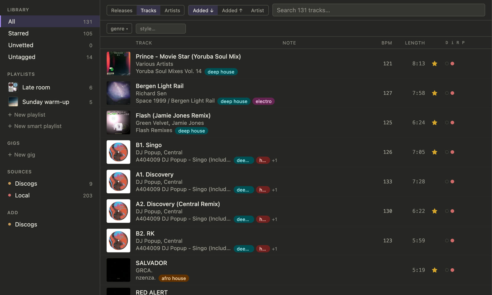
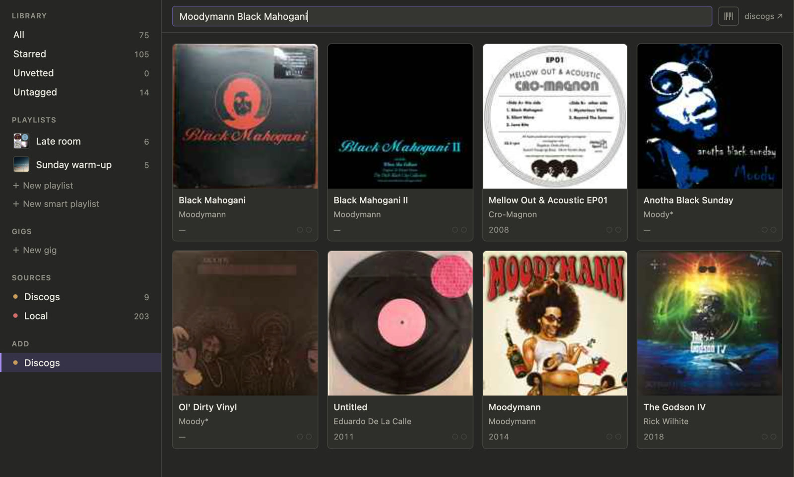
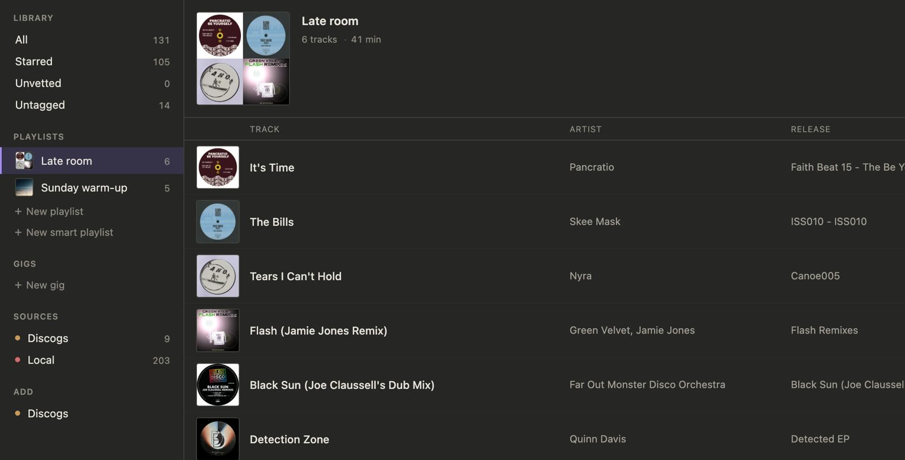

What it does
One library, wherever the music lives
Records from Discogs and the files in your digital library land in the same list. Tempo, stars and notes sit right next to every track.

Add a record in seconds
Easily add to your Discogs collection by scanning barcodes or searching by catno or runout etchings

Rip your vinyl collection to digital
Plug in your audio interface, drop the needle, and rip a side. booth finds the gaps between tracks, lines them up with the tracklist from Discogs, and saves each one digitally.
Plan your gigs
Star what works, write notes on what doesn't, and build playlists and gig sets from the tracks you trust. Keyboard-first allows you to move fast.

Install and set up
-
Download and install
Open the .dmg and drag booth into Applications. On an Intel Mac, unzip the Intel version and follow the README inside. Not sure which Mac you have? Apple menu → About This Mac: a Chip line naming Apple M1 or newer means Apple Silicon; a Processor line naming Intel means Intel.
-
Let macOS open it
The first time, macOS refuses because booth isn't from the App Store. Click Done, open System Settings → Privacy & Security, scroll down, click Open Anyway next to the message about booth, and confirm. You only do this once.
-
Connect Discogs
booth asks for a Discogs token. Get one from Discogs → Settings → Developers (“Generate new token”) and paste it in. Your collection starts loading straight away.
-
Bring in your digital library Optional
booth reads the library Apple Music shares. In Music, open Settings → Advanced and turn on Share Library XML with other applications. Then click Find my Music library in booth, and allow access to your Music folder when macOS asks.
-
Tempo analysis Optional
To have booth work out BPMs, install ffmpeg with Homebrew:
brew install ffmpeg. -
That's it
booth keeps itself up to date. When a new version is ready, a “Restart to Update” button shows up in the title bar. The camera and microphone prompts appear the first time you scan a barcode or rip a record.